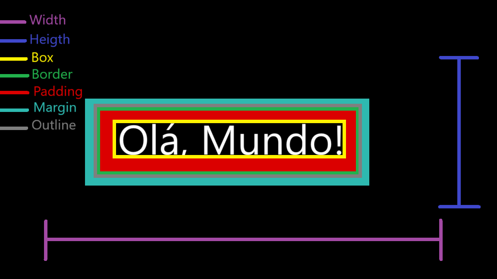

Anatomia de uma box

Aqui vai alguns conceitos de caixas no CSS
Box é como se chama uma espécie de linha imaginária que fica ao redor do conteúdo, nessa borda, temos algumas características:
- height : é a altura da caixa
- width : é a largura da caixa
- border : é a borda do conteúdo
- padding : é distancia da borda e do conteúdo
- margin : é o espaço que fica
- outline : é o espaço que fica entre a margem e a borda
Tipos de caixa
Temos dois tipos de caixas, sendo elas o box-level e o inline-level
Box-level
O box level sempre vai se iniciar em uma linha nova, uma linha abaixo, independente do espaço que sobra na linha ade cima, ele sempre vai ocupar a largura total da tela. São exemplos de box-level:
- div : Define uma divisão ou uma seção em um documento html
- h1 - h6 : Título
- main : Define o conteúdo principal dentro do body em seu documento ou aplicação
- nav : define a seção de mavegação de links
- article : representa uma composição independente em um documento, página, aplicação, ou site, ou que é destinado a ser distribuido de forma independente ou reutilizável
- aside : representa uma composição independente em um documento, página, aplicação, ou site, ou que é destinado a ser distribuido de forma independente ou reutilizável
- footer : representa um rodapé para o seu conteúdo de seção mais próximo ou seu parente mais próximo
- form : usado para criar um formulário
- video : usado para adicionar um arquivo de vídeo
Inline-level
Ao contrário do box-level, ele nao vai descer para a linha de baixo, caso tenha espaço, ele vai seguir a linha e usando o espaço necessário, sem quebrar para a linha de baixo. São exemplos de inline-box
- span : usado para agrupar elementos para fins de estilo (usando os atributos class ou id)
- a : usada para acrescentar um link
- code : são utilizadas para estruturar e formatar o conteúdo, como textos, imagens e vídeos.
- small : usado para deixar um texto menor
- strong : usado para deixar o texto em negrito
- em : marca o texto em função de enfase
- sup - sub : usado para criar um texto a cima e abixo da linha respectivamente
- label : representa uma legenda para um item em uma interface de usuário
- button : é utilizada para inserir interatividade em uma página ou formulário e tem como função executar uma determinada ação ao receber um clique
- input : é utilizada para criar campos de entrada interativos em formulários HTML
- select : é utilizada para criar uma lista de seleção, que apresenta um menu de opções